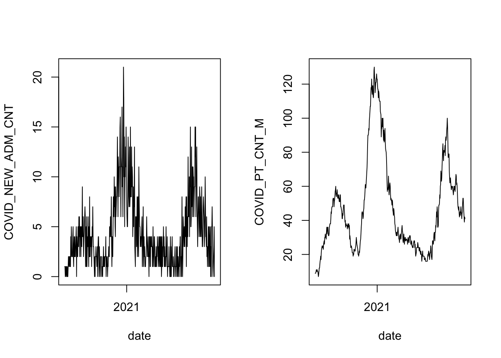

2 Example: COVID-19 hospital admissions
Let’s load the data for the examples that we’ll be working through today. First, though, we need to load some packages and set the path to use for loading data.
library( "dplyr" )
library( "lubridate" )
library( "readr" )
library( "gbm" )
# set the root path for loading data.
data_path = "https://raw.githubusercontent.com/ucdavisdatalab/workshop-model-validation/master/data"The data sets that we’ll use for illustration are a time series of daily hospital admissions for COVID-19, and a time series of the number of beds occupied overnight by COVID-19 patients. Our goal will be to create models that can predict the future values of these time series. I like to begin with a pair plot of all the data, but here we have 81 columns, which is too many to fit on a pair plot. Instead, we’ll look at the time series.
# import the covid dataset
covid = read_csv( file.path(data_path, "covid.csv") )
# plot the admissions time series
with( covid, plot(date, COVID_NEW_ADM_CNT, type='l') )
The count of daily admissions is a nonnegative integer. It appears that there is a lot more variability in the admissions count when the recent rate of admissions is near its peaks than when it is near zero. There isn’t a theoretical maximum for daily admissions (though of course there would be a practical maximum, if the hospital became overwhelmed). And we can reasonably assume that each admission was an independent decision. To a statistician, those facts all point toward trying to assume that the counts follow a Poisson distribution.
There is another type of independence to consider here: is the number of daily admissions independent from the number of admissions the day before? That kind of independence doesn’t mean you pretend that there’s no information in the most recent counts - instead, it means that the short-term fluctuations are as likely to be above the trend as below it. Without that independence, we would say that the data are autocorrelated. And we can test for autocorrelation:
# plot the autocorelation function of the diff-1 covid admissions
acf( diff(covid$COVID_NEW_ADM_CNT, 1) )
You can ignore the first line of the chart - it is there to show how long a line is drawn to show perfect correlation at zero time lag. The salient feature of this plot is that the third line points downward, and crosses the dashed blue line. There is apparently a tendency for the count to decrease the day after it increases, and vice versa. This may or may not be due to some trend in the covariates - we’ll check again after accounting for the explanatory variables.